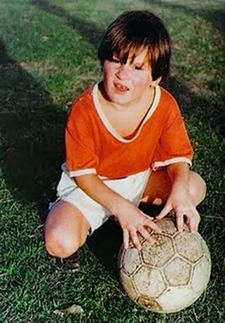

1987
The Boy from Rosario
Born in Santa Fe, Argentina. Diagnosed with a growth hormone deficiency, his sheer talent was too vast for his small frame to contain. A grandmother's unwavering belief sparked the journey.
